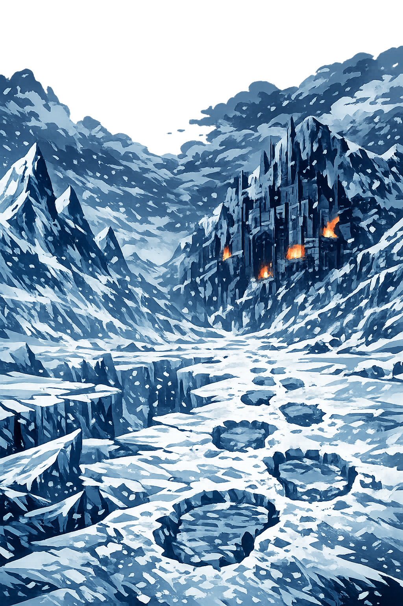

The Authentic Orthography
Realm of Frost and Stone · Beyond the Walls of Asgard

Why jötunheimr.com preserves the Old Norse length
Jötunheimr
The name in its original Old Norse form — a compound of jötunn (giant) and heimr (home, world, realm). The umlauted ö is not a stylistic flourish. It is the O-umlaut, a regular phonological change in Old Norse where original *u became ö when the following syllable contained u or o. This is the same process that produced lögr from *lagu-. The ö preserves the length and vowel quality of the ancestral form — a living record of Germanic sound law.
JOTUNHEIMR
Stripped of its umlaut, the name becomes flat and cold in a different way — the cold of a database entry, not a glacier. The ö is reduced to o, and with it goes the entire phonological history of the umlaut process. What remains is a string that any keyboard can type and no scholar can love. The ASCII form is legible, but it is not the name. It is the name's ghost.
Jötunheimr
The umlaut ö (U+00F6, Latin Small Letter O with Diaeresis) restores the length marker that the ASCII form silently erases. In our Tier-2 system, this is classified as Macron-Preserving — the ö encodes the historical long vowel quality that resulted from umlaut. The domain encodes to Punycode, but the browser displays the truth: a name with its phonological history intact.
jötunheimr.com → xn--jtunheimr-07a.com
The non-ASCII character ö (U+00F6) is encoded while the ASCII remains visible. To the DNS, it is Punycode. To the Eddas, it is Jötunheimr — the realm where frost and stone conspire against the gods.
Where jötunheimr stands in the PUNYCODEX elegant tier system
Under the elegant tier system, non-Greek canonical forms are Tier 1 by definition. Old Norse has no macron+acute dual-mark system. Its canonical form — the form with þ, ð, o, and acute — is its highest orthography.
jötunheimr is Tier 1 because it preserves the authentic characters of the Norse pantheon. These are not decorative. They are the scholarly standard — the same forms you will find in Cleasby-Vigfusson, in Simek, in the Prose Edda. To strip them would be to Latinize. The PUNYCODEX does not Latinize.
How the realm of giants was truly spoken
Frost, stone, and the kingdom beyond the gods
Jötunheimr is not merely a place. It is the anti-realm — the world that exists in deliberate opposition to Ásgarðr. Where the gods have gold and light, the giants have ice and shadow. Where Ásgarðr is order, Jötunheimr is chaos in its most ancient, most magnificent form. It is one of the Nine Worlds, and without it, the cosmos would collapse. The giants are not evil. They are necessary. They are the force against which the gods define themselves.
Jötunheimr stands among the Nine Worlds of Yggdrasill's branches. It is the home of the jötnar — not merely "giants" in the modern sense, but primordial beings of enormous power, wisdom, and age. Without Jötunheimr, there is no cosmic balance.
At the heart of Jötunheimr lies Utgarðr — the "Outer Enclosure" — a stronghold of illusions and impossible contests. It is ruled by Útgarða-Loki, the master of deception, whose magic can make the impossible seem trivial and the trivial seem impossible.
The giants live outside the walls of Ásgarðr — literally and cosmologically. They are the other against which the Æsir define themselves. Yet the boundary is permeable: gods marry giants, giantesses bear divine children, and the worlds are linked by bridges and roots.
Þórr travels to Jötunheimr more than any other god — by fishing boat with Hymir, by chariot across the sky, by deception and force. The giants are his adversaries, but also his in-laws. The world of frost is the forge on which his legend is hammered.
Stories of thunder, deception, and the world beyond the walls
Þórr went fishing with the giant Hymir, the father of Týr. They rowed far out to sea, farther than Hymir was comfortable with. Þórr baited his hook with the head of an ox and cast it into the deep. The World Serpent, Jörmungandr, bit. The line went taut. The sea boiled. Þórr planted his feet against the boat's floor and hauled with all his divine strength. The serpent's head broke the surface — venom dripping, eyes like moons of poison. Þórr raised his hammer Mjollnir to strike the death-blow that would end the world-serpent forever. But Hymir, terrified, cut the line. Jörmungandr sank back into the black water. Þórr was so enraged that he struck Hymir with his fist and the giant fell overboard. The poem says that Þórr's fury was terrible to see. And the serpent waits, coiled around the world, until Ragnarok.
Þórr, Loki, and two servants traveled to Jötunheimr and came to the hall of Útgarða-Loki. The giant challenged them to contests. Loki lost an eating contest to Logi, who was fire itself. The servant Hugi outran thought. Then it was Þórr's turn. He was given a horn to drink from, but the horn was connected to the sea — he lowered it, but the tide still rises twice a day from his efforts. He was asked to lift a cat, but the cat was Jörmungandr in disguise — he lifted one paw, and the earth shook. He was asked to wrestle an old woman, but she was old age itself — no one defeats Elli. Utgard-Loki revealed the deceptions and admitted that Þórr's strength had terrified him. He would not risk another contest. The hall vanished. The giant was gone. And Þórr stood alone in the empty waste, his hammer heavy in his hand.
After the war with the Vanir, Ásgarðr needed new fortifications. A builder appeared — a giant, but a master craftsman. He offered to build an impenetrable wall in three seasons in exchange for Freyja, the sun, and the moon. The gods agreed on the condition that he finish in one season with no help but his stallion Svaðilfari. The builder worked with supernatural speed, and his horse was no ordinary beast — it hauled stones that would crush a team of oxen. As the deadline approached, the wall was nearly complete. The gods turned to Loki, who had negotiated the deal. Loki transformed into a mare and lured Svaðilfari away. The builder, enraged at the delay, revealed his true giant form. Þórr killed him with a single blow of Mjollnir. But Loki's trick had consequences: from the union of mare and stallion came Sleipnir, the eight-legged horse that would become Óðinn's steed. The wall was finished. The giant was dead. And the gods had their fortress — built by a giant, paid for with deception, and haunted by the horse that runs between worlds.
Forms of the name across time and orthography
Note: Modern Icelandic uses Jötunheimar in many contexts, but Jötunheimr preserves the Old Norse nominative singular — the form that would have been spoken by the saga-tellers and poets who composed the Eddas. The final -r and the umlaut ö are not decorative. They are the grammatical and phonological skeleton of the word.
Jötunheimr is not merely a name — it is a world. One of the Nine Worlds of Norse cosmology, the realm of the giants stands in eternal tension with Ásgarðr. Without the giants, there are no stories. Without Jötunheimr, there is no Ragnarok, no fishing trip, no contest, no wall. The frost and stone are not the enemy. They are the necessary opposite.
This is not a directory. This is a resurrection.
Enter the CodexSee how Jötunheimr behaves in the PUNYCODEX Type Tool — with predictive autocomplete, character-by-character breakdown, and scholarly constraint validation.
jotunheimr
→
Jötunheimr